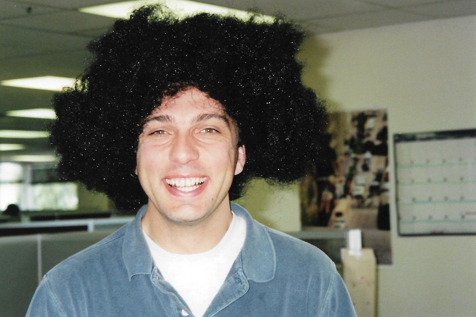

Joining Asimba, a technology start-up at the heart of Silicon Valley, came along with countless hours of writing, maintaining, and debugging code. Our only breaks during our 16-hour working schedule were lunchtime and foosball! In the beginning, as a foosball rookie, I was getting crashed over and over, leading to low morale, and a goal, to get better!
In the beginning, as a foosball rookie, I was getting crashed over and over, leading to low morale, and a goal, to get better! As time went by, along with my coding skills, signs of progression began to emerge on my foosball game as well.
It wasn't too long before I started winning games. I was getting so good that every time I would ask a colleague to a match, it'd be like that:
In the beginning, as a foosball rookie, I was getting crashed over and over, leading to low morale, and a goal, to get better! As time went by, along with my coding skills, signs of progression began to emerge on my foosball game as well.
It wasn't too long before I started winning games. I was getting so good that every time I would ask a colleague to a match, it'd be like that:
Are you ready to get on the bus? The conductor will take you to school!There you have it, the Silicon Valley Conductor, taking the foosball boys to school since 1997! 😎